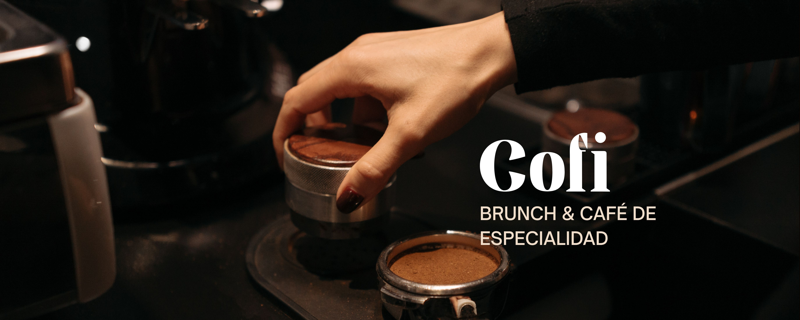

Café & bebidas de autor
Un latte, un matcha o algo frío: encuentra tu favorito en la barra.
Para despertar bonito ↗
Brunch sin prisa, bebidas hechas con cariño y ese ratito que se disfruta mejor alrededor de la mesa.

Un espacio de brunch y café de especialidad en el barrio de El Carmen. Ven por un desayuno, una charla larga o una bebida que te alegre la tarde.
Guarda la dirección y abre la ruta en Google Maps. Los horarios publicados pueden cambiar; revisa la ficha antes de salir.